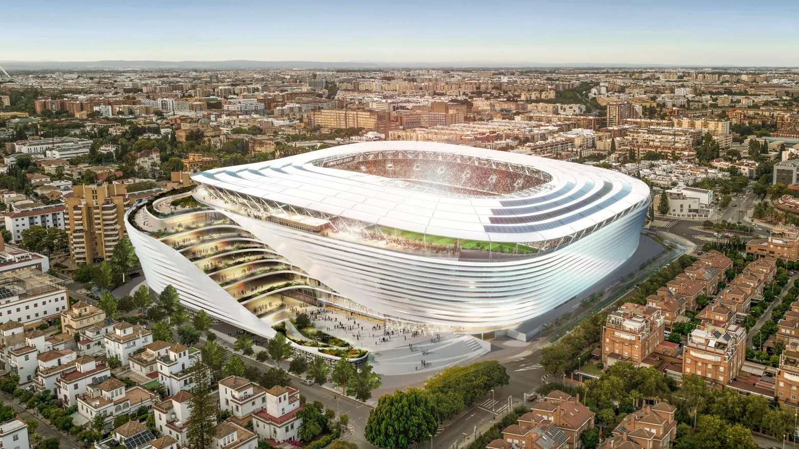
REAL BETIS · STADIUM VISUAL01 / STADIUM EXPERIENCE
챔피언스리그 직관
레알 베티스와 코모 경기 관람 일정. 관중의 함성과 유럽 무대의 경기 문화를 현장에서 경험합니다.
Real Betis INSIDE Camp
레알 베티스 인사이드 캠프
지금 잘한다고 미래가 정해지는 것도,
지금 부족하다고 가능성이 사라지는 것도 아닙니다.
어린 선수의 미래를 단정하기보다,
세계의 기준을 직접 경험할 시간.
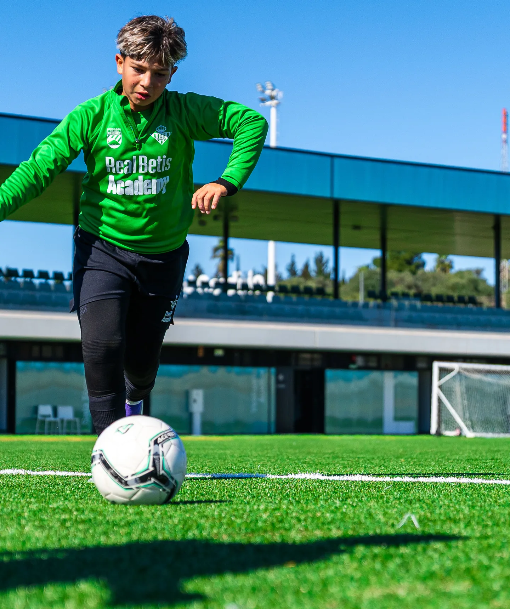
부모라면 누구나 궁금합니다.
우리 아들, 프로선수가 될 수 있을까?
지금 잘하는 게 진짜 재능일까?
하지만 유소년 선수의 미래는 지금의 득점 기록이나 주전 여부만으로 쉽게 예측할 수 없습니다.
네덜란드 스카우트 125명을 조사한 연구. U12 이하를 평가하는 스카우트들은 미래의 프로 가능성을 판단할 수 있다고 생각하는 시기를 평균 13.6세로 답했습니다.
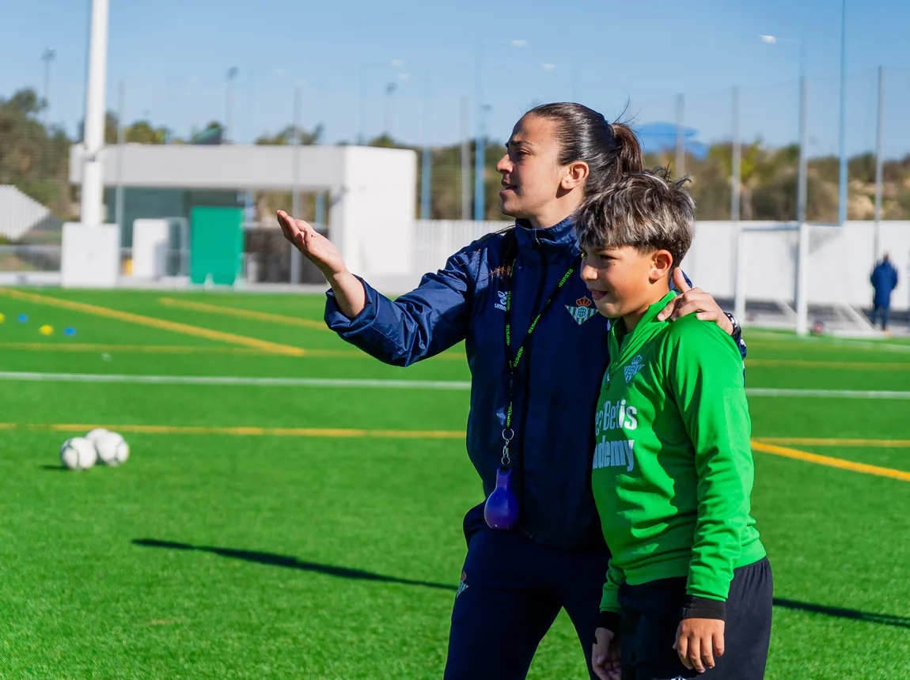
스페인 마드리드의 프로구단 2곳에서 뛰던 유소년 선수 198명을 장기간 추적한 연구. 그중 전업 프로선수로 성장한 선수는 12명이었습니다.
연구에서 발견된 특성
이것은 특정 구단의 관찰연구이며, 프로 진출의 확정적인 예측 공식이 아닙니다.
8대8에서 11대11로. 경기의 공간이 넓어지고 선수들의 역할과 판단이 복잡해집니다. 대한축구협회도 U13 전환기에 공간 인식과 의사결정 능력의 중요성을 강조했습니다.
지금 필요한 건 성급한 재능 판정이 아니라
다음 단계에 대비하는 새로운 경험.
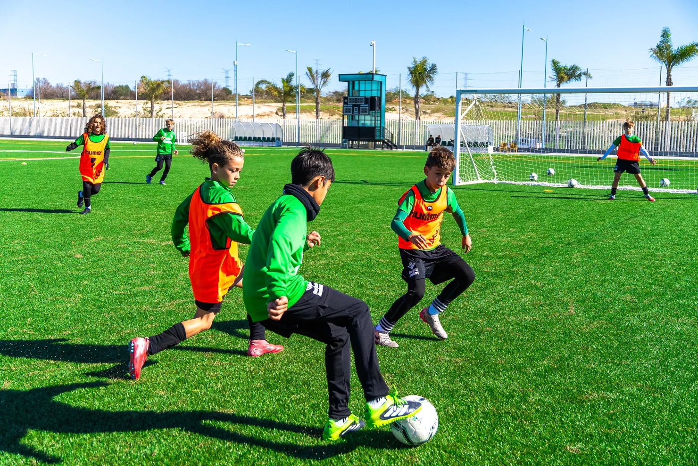
FROM POTENTIAL레알 베티스가 설명하는 교육 방법론을 경험하고, 구단의 훈련 시설에서 배우며, 현지 유소년 선수들과 직접 경기를 진행합니다.
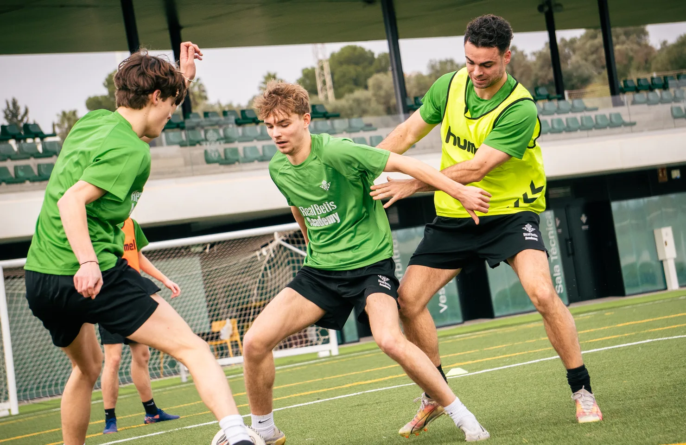
하루 두 세션이 있는 날은 90분 × 2회, 총 3시간. 기술·전술·게임 상황 중심의 현지 지도.
최소 UEFA A 지도자 · 코치 1명당 최대 15명 기준 · GK 전문 훈련 포함
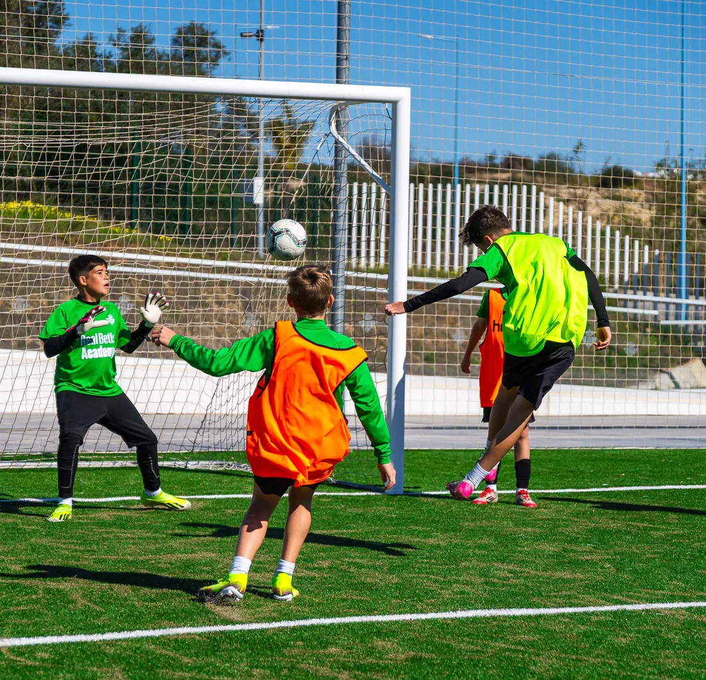
자주 공을 받고 빠르게 판단하는 소규모 경기
동료의 움직임과 공간을 파악하는 전환 단계
포지션과 팀 전술을 이해하는 전체 경기

REAL BETIS · STADIUM VISUAL레알 베티스와 코모 경기 관람 일정. 관중의 함성과 유럽 무대의 경기 문화를 현장에서 경험합니다.
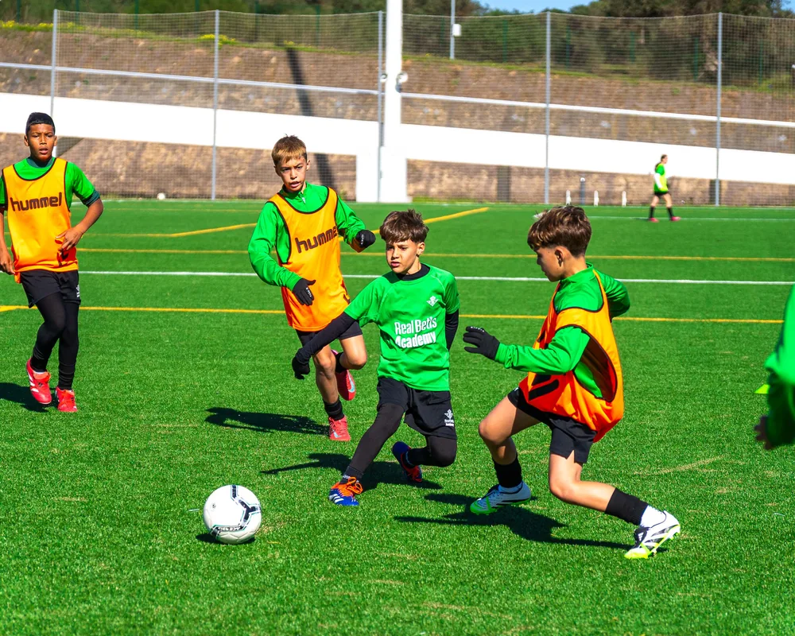
훈련이 열리는 시우다드 데포르티바 라파엘 고르디요와 구단 시설 등 레알 베티스의 현장을 경험합니다.
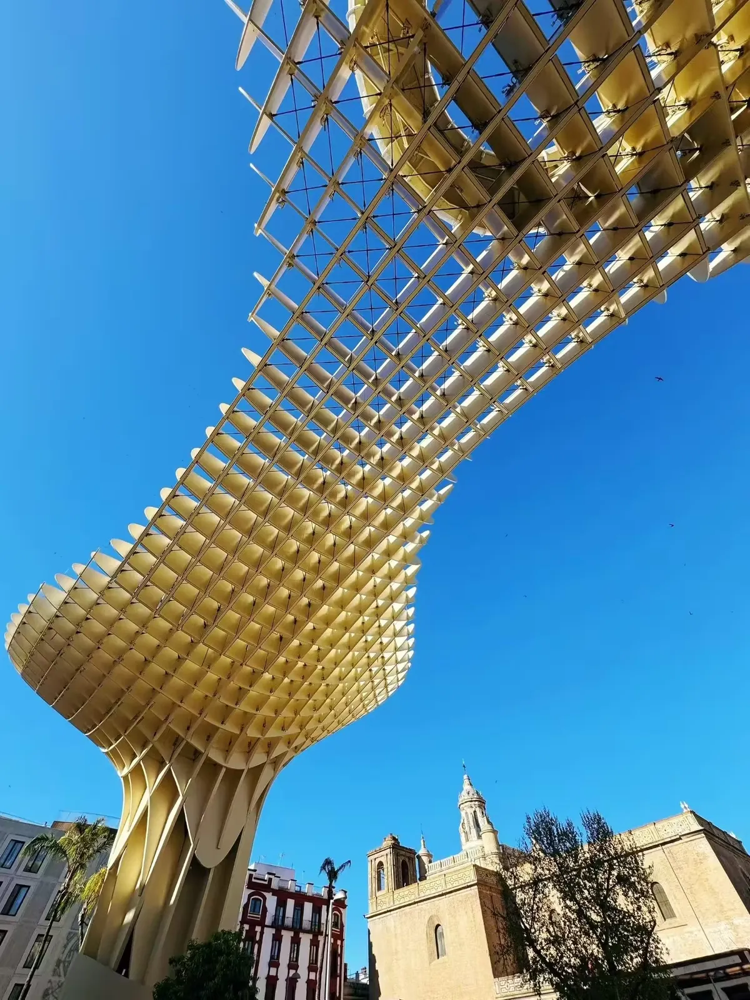
SEVILLA · CITY EXPERIENCE스페인 도시와 문화에 직접 들어가 보는 시간. 일정 중 하루는 휴식과 자유일정으로 운영합니다.
훈련장 밖에서도 이어지는 스페인의 풍경
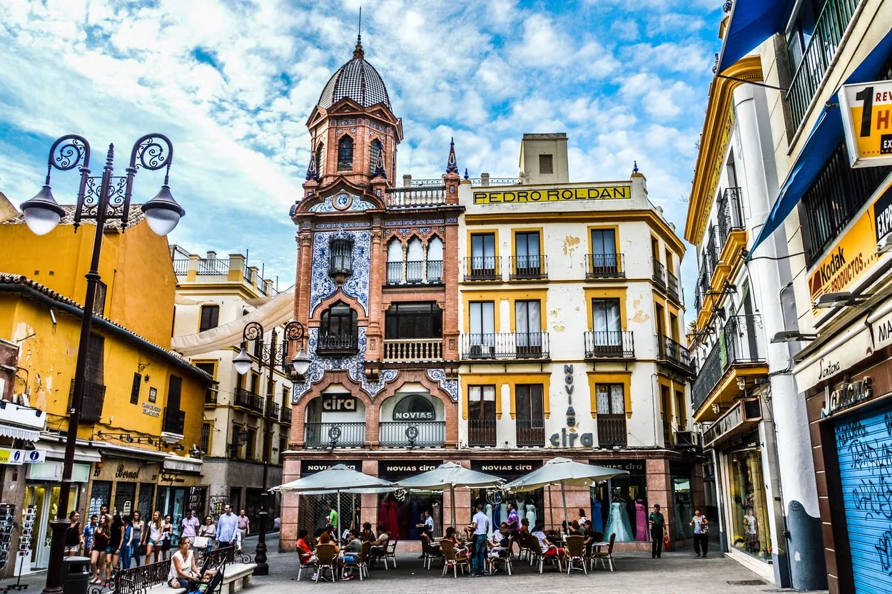
* 세비야 현지 분위기를 소개하는 사진입니다. 실제 관광 동선과 방문지는 현지 일정에 따라 조정됩니다. 경기장 이미지는 조감도 참고 자료입니다.
전직 프로축구 선수 신세계·이범영·박준태가 캠프에 동행합니다. 현지 베티스 코치진은 훈련을 지도하고, 국내 동행 인솔진은 이동과 생활·의사소통을 지원합니다.
훈련은 1회 90분, 총 9회입니다. 오전·오후·저녁으로 일정을 나누고, 각 시간대의 훈련·경기·관광과 자유일정을 구분해 안내합니다.
훈련은 각 90분, 총 9회이며 하루 2회 훈련 시 총 3시간입니다. 8일 오후·11일 저녁 세션 등 편성 변경은 현지 지도자 및 훈련장 일정에 따라 시간이 조정될 수 있습니다. 12월 13일 저녁 스페인 출발, 14일 한국 도착입니다.
Yugo Sevilla Bermejales 레지던스 · 선수 1인실 기준 운영
프로그램 일정에 맞춘 식사 제공 · 한식 식사 운영
레알 베티스 구단이 대절하는 단체버스로 마드리드↔세비야 이동 · 세비야 내 모든 공식일정도 단체버스 이용
국내 인솔·통역 동행 · 현지 상해보험 및 보호자 비상연락 체계
이번 캠프의 왕복 국제선 항공권은 관광사업자 등록업체인 (주)신흥항공을 통해 예약 및 발권합니다. 예약금 납부 확인과 발권정보 접수 후 3일 이내 발권을 진행하며, 항공편과 예약번호를 안내합니다.
항공권 변경 및 취소는 실제 발권된 항공권의 운임규정과 계약조건에 따라 처리됩니다.
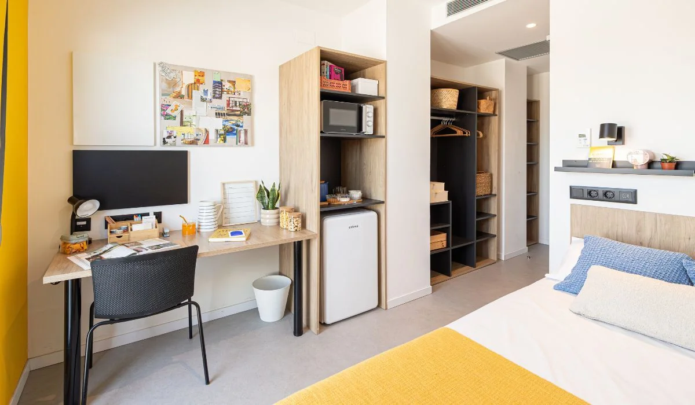
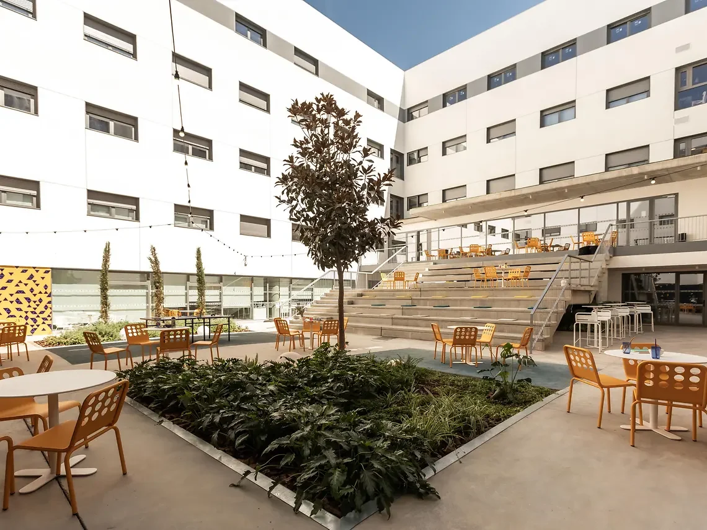
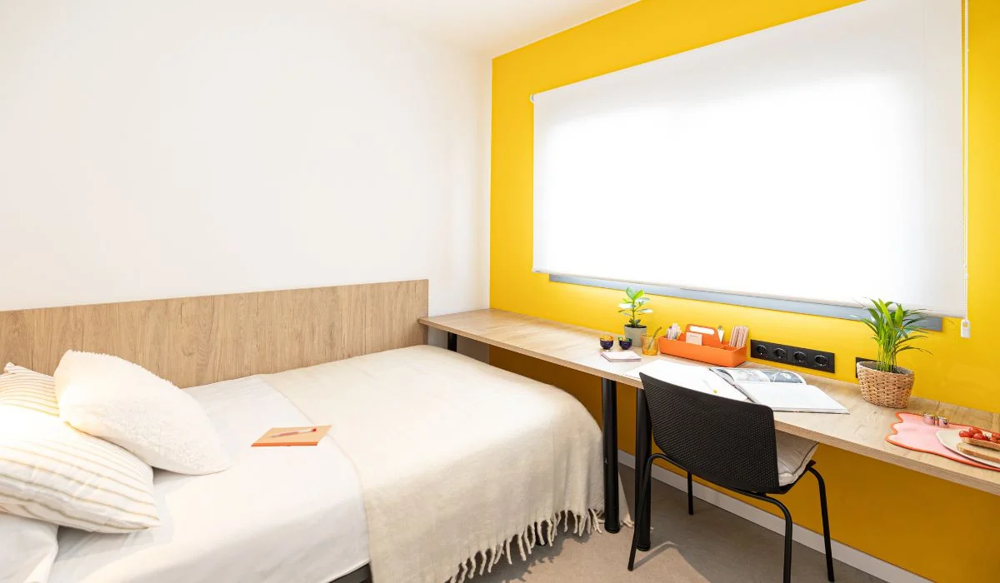
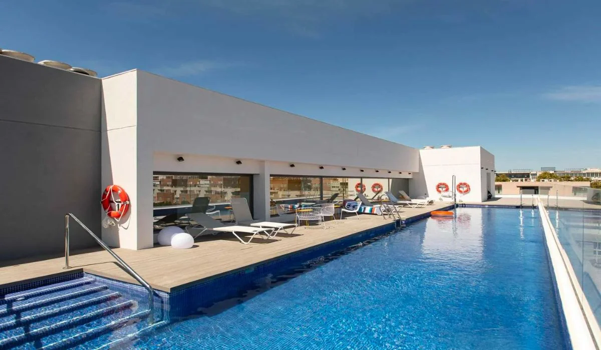
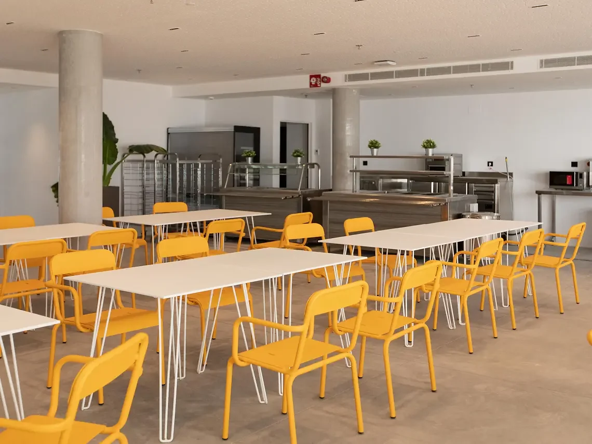
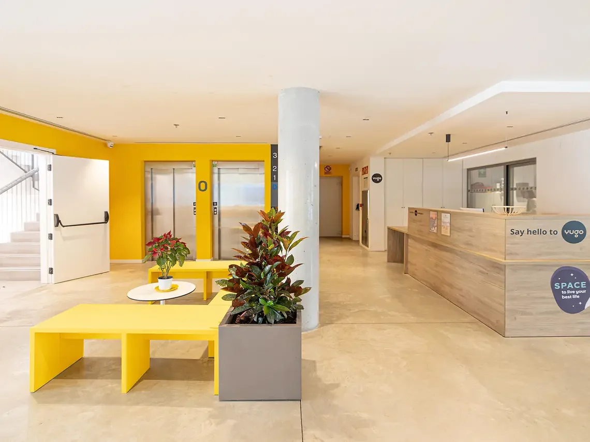
* 숙소 시설 참고 사진입니다. 실제 배정 객실과 이용 가능한 편의시설은 현지 배정 및 운영 기준에 따라 다를 수 있습니다.
선수와 동행 학부모 모두 왕복 항공권이 포함된 가격입니다. 프로그램 구성과 결제 절차를 한눈에 확인해 보세요.
왕복 항공권 포함 · 현지 훈련 및 숙박·식사
왕복 항공권 포함 · 현지 숙박·식사·이동
예약금 결제 확인·발권정보 접수 후 3일 이내 항공권 발권 진행
영문 성명 등 항공권 발권에 필요한 정보는 신청 후 별도로 안내합니다.
항공권 예약·발권 담당: (주)신흥항공 · 일반여행업 2012-17
예약 후 10일 이내 취소 시 프로그램 비용 전액 환불 (단, 출발 10일 전부터는 아래 기준이 우선합니다.)
출발 10일 전부터 출발 당일까지 취소 시, 프로그램 참가비의 50%를 환불합니다.
항공권 발권 후 취소수수료 30만 원 · 출발 당일 미탑승(노쇼) 시 항공운임 환불 불가 및 항공사 노쇼 수수료 발생
위 출발 임박 환불 조건은 일반 국외여행 기준과 다른 특별약관에 해당할 수 있습니다. 항공권 취소수수료와 프로그램 환불액의 중복 공제 여부, 불가피한 취소 사유 등은 실제 참가 계약서와 관련 법령에 따라 적용됩니다.* 항공권은 포함된 상품으로 안내합니다. 별도의 개인 경비 및 선택 활동 비용은 제외될 수 있습니다. 본 상품의 세부 포함사항, 취소·환불 조건과 참가 계약 내용을 결제 전에 확인해 주세요.
선수 신청서는 1차 목표 인원 이후에도 계속 접수합니다. 실제 참가 확정은 운영팀의 안내와 예약금 결제 확인 후 진행됩니다.
신청 접수 현황 2026.11.02 기준 · 15명은 1차 모집 목표이며 초과 신청도 접수합니다. 신청은 결제 완료와 별도입니다.
참가 전 궁금한 부분을 남기지 않도록 주요 정보를 모았습니다.
지금 필요한 것은 결과를 예측하는 일이 아니라
더 넓은 무대에서 배우고, 부딪히고, 성장할 기회입니다.
같은 고민을 가진 학부모님들이 참고할 수 있도록 질문과 의견을 나누는 공간입니다. 개인정보·선수의 민감한 정보는 남기지 마세요.
질문과 의견 0
학부모 질문